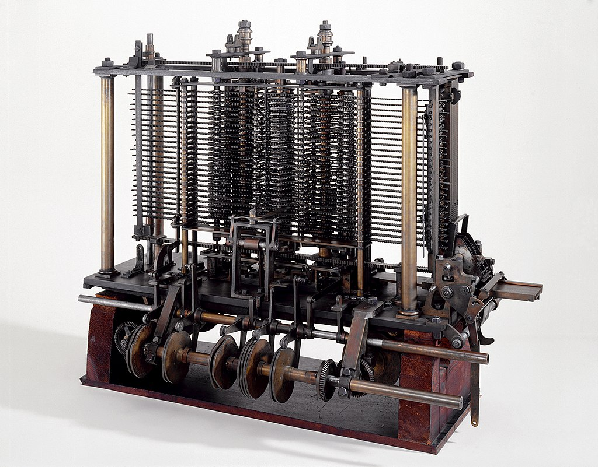

The Early History of Computers
A central idea in computing theory is that information can be used to represent data or instructions - sort of like how the human voice can be used to describe something, or to tell someone what to do. All of the information in modern computers are stored in the format of zeroes and ones.
A punchard operated loom. Image via wikimedia
commons
{kind=link}

Luddites destroying the looms. Image via wikimedia
commons
{kind=link}
People sometimes make the mistake of assuming zeroes and ones (also known as binary) is somehow special. (psst, it's not!) The first computers actually used the numbers 0-9, and that history is a really useful tool for understanding how modern computers work. In fact, it was this early dependence on base 10 which killed the first computers before they had the chance to mature into a useful machine.

The precursor to computers were completely unrelated to calcuation - they were actually specialized kinds of
industrial looms. Making fabric patterns requires a very complicated organization of colored thread to be woven
together perfectly. Automated looms created in the early 19th century used cards with holes punched in them
(punch cards) to mechanically shift what threads were placed where.
Babbage and Lovelace's Difference Engine. Image via wikimedia
commons
.jpg){kind=link}
This machine was so advanced, it was an early form of automation which replaced the occupational roles many skilled laborors. In 1811 those workers began burning the looms in protest, and became known as the luddites, which to this day is used as a term to mean someone who is against technological progress. The question of production, labor, and automation, have always been embedded within computing - even in its progenitor the loom.
The luddites launched the loom into public awareness - including the salons of the upper clases, where aristocratic scholars could meet and share ideas. Charles Babbage was one such elite. In the loom, he saw the potential to connect his understanding of engines and mathematics to make a mechanical device which could solve math problems. Rather than punchcards representing threads, they could instead be used to represent numbers and mathematical operations which the loom could then solve like an abacus. He called his device the Analytical Engine.
As Babbage worked on his mechanical designs, he recruited the young socialite Ada Lovelace to formulate how the punchcards would operate. Lovelace was a mathematical prodigy and the daughter of Lord Byron (Her mother suffering a falling out with Byron, insisted her daughter learn mathematics - the furthest discipline from poetry she could conceive of), and is now thought of as the first computer programmer.
The analytical engine was never built - the hand made parts were cumbersome and expensive and government financing ceased prior to the assembly of a prototype. Similar to the arabic numeral system we are familiar with, his machine was in base 10. This required a complicated gearing system with 10 settings for each digit. Although we find it easier to operate in the world with ten digits, it was a structural hurdle which fatally complicated the analyitcal engine's design.
Those needing to perform simple calculation continued to rely on abacuses, slide rules, and other such handheld tools which though simple proved reliable and easy to make. It wasn't for another century that attention would return to the general-purpose computer.
Computing the War
Reconstruction of Zuse's Z1 Computer. Image via wikimedia
commons
#/media/File:Zuse_Z1_-_Flickr_-_KlausNahr_(3).jpg
){kind=link}
As an aside:
Interestingly not unlike Babbage, Zuse lost his government funding due to the belief that his machine did
not
have strategic importance. The Third Reich felt that between their hand calculations and the enigma machine
(an
early encryption tool), no further investment in computation or ciphers was necessary for the war effort.
The
Allies thought differently, and broke Enigma using their own early proto-computer known as the Bombe. Also
at this time, people imprisoned at Auschwitz were tatooed with IBM identification numbers. Both blessings and horrors have forever followed the wake of calculation machines.
So why did switching to binary produce more efficient calcuating machines? We'll cover that in the next essay, which focuses on how humans count numbers and why computers use base 2.
<- Back to How Do Computers Work